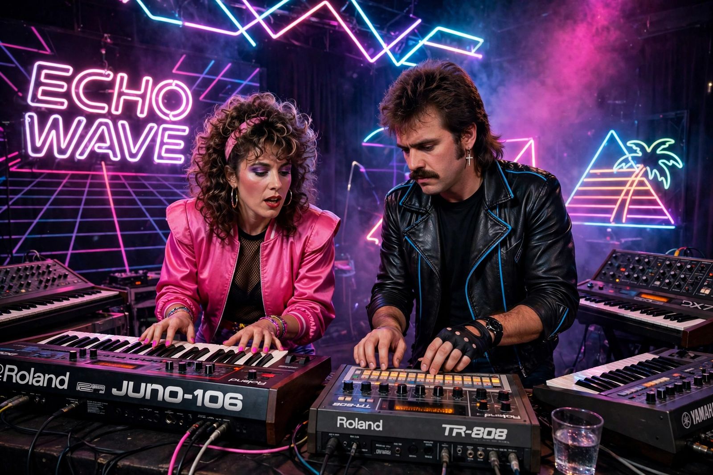

| Synth-pop | |
|---|---|
 | |
| Other names | Technopop |
| Stylistic origins | Electronic, disco, new wave, krautrock, glam rock |
| Cultural origins | 1977–80, West Germany, Japan and the United Kingdom |
| Typical instruments | Synthesizer, drum machine, sequencer, vocoder |
Synth-pop (short for synthesizer pop; also called technopop) is a music genre that first became prominent in the late 1970s and features the synthesizer as the dominant musical instrument. It emerged as a distinct genre in Japan and the United Kingdom as part of the new wave movement of the late 1970s.
The synthesizer work of German krautrock bands — above all Kraftwerk, co-founded by Ralf Hütter and Florian Schneider — and of Japan's Yellow Magic Orchestra supplied the template. British groups such as Ultravox, the Human League, Depeche Mode, Orchestral Manoeuvres in the Dark and Gary Numan brought synth-pop to the top of the charts between 1979 and 1982, helped by falling synthesizer prices and the arrival of affordable drum machines and sequencers.
In the mid-1980s acts such as Pet Shop Boys, a-ha and Tears for Fears carried synth-pop to stadium scale, while in the United States it fed into freestyle and dance-pop. The genre's fortunes waned as guitar-based alternative rock rose, but it revived strongly in the 2000s–2010s through artists including Lady Gaga, La Roux, Chvrches and The Weeknd.
Synth-pop songs are built on electronic textures: sequenced basslines, drum-machine beats, arpeggiated synth lines and often detached, futuristic vocals, with themes of technology, modern life and romance.
Kraftwerk · Techno · Krautrock · New wave music
From Wikipedia, the free encyclopedia (recreated from memory).